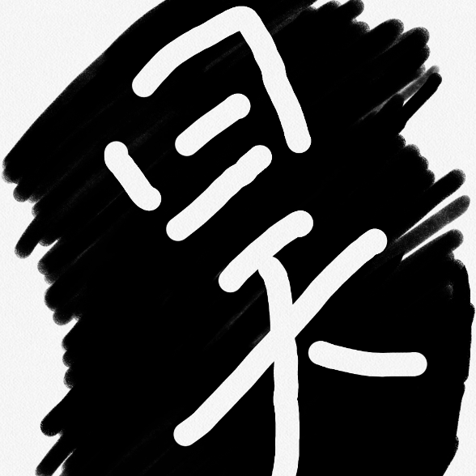

星座：
天蝎座
爱好：
资深lol玩家
小的时候我我们家是住在了一个大的平房，在那里我学会了孩童时期 的所有技能，但是我们很早就搬家了，以至于我现在对于那个房子的印象只是停留 在模型上。之后搬到了城里来住，小区的生活充满了我的童年。
迎来初高中的时候我不得不在学校上三周课，即使放了两天的假，我们也不再出去玩耍，而是在家中开始 写作业之后玩电子产品。我们不得不为了一个目标————高考而拼劲全力，但是在这过程 之中我结识了许多志同道合的人。
最让我印象深刻的就是这高三这一年，在这一年中我们 拼劲全力去学习，只为了一个分数，但是我们也会在这无聊的生活中发现自己的快乐，因 为我有了身边这些人我才度过了一个快乐而且充实的高三。
现在的我身处大学的平台之上，上了大学才知道比自己优秀的人比比皆是， 不能自满，但是也不能自卑，因为我还有努力的可能性，虽然自己没有软件 的基础，但是自己也愿意去学一些东西。这里才是人生的开始。